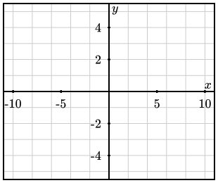

Activity 1.6.1.
We will explore \(F(x)\) from numerical, graphical, and algebraic perspectives.
(a)
Recall that we know a function whose derivative is \(\frac{1}{1+t^2}\text{,}\) namely \(\arctan(t)\text{,}\) but we haven’t yet encountered an elementary function whose derivative is \(f(t) = \frac{t}{1+t^2}\text{.}\)
(b)
Analyze the first derivative of \(F\) algebraically to determine the intervals on which \(F\) is increasing and decreasing.
(c)
Analyze the second derivative of \(F\) algebraically to determine the intervals on which \(F\) is concave up and concave down. Note that \(f'(t)\) can be simplified to be written in the form \(f'(t) = \frac{1-t^2}{(1+t^2)^2}\text{.}\)
(d)
Use a Riemann sum calculator with midpoints and 10 subintervals to calculate approximate values of \(F(x)\) in the table shown below.
Note that \(F(0)=\int_0^0 f(t) \, dt = 0\text{.}\)
| \(x\) | \(-10\) | \(-5\) | \(0\) | \(5\) | \(10\) |
|---|---|---|---|---|---|
| \(F(x)\) | 0 |
(e)
Use your work above to sketch an accurate graph of \(y = F(x)\) on the axes provided below.

(f)
Now consider the function \(g(x)=\frac{1}{2}\ln(1+x^2)\text{.}\) Calculate \(g(0)\) and \(g'(x)\text{.}\) Use appropriate computing technology to plot the graph of \(g(x)\text{.}\) What can you conclude about the functions \(F(x)\) and \(g(x)\text{?}\)